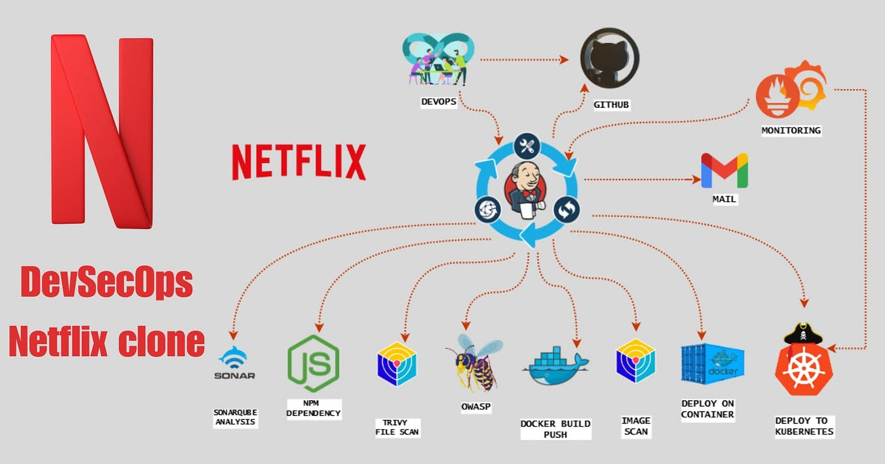
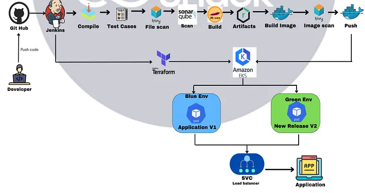
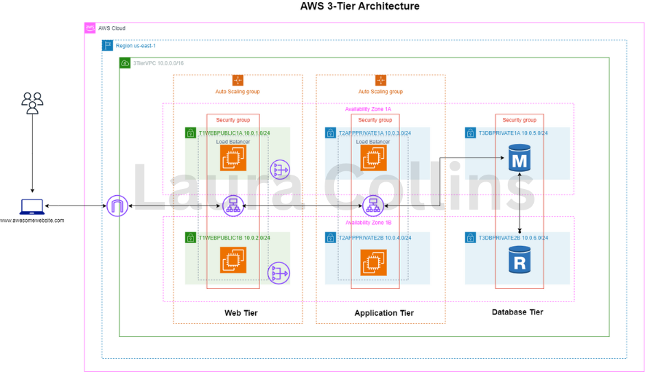
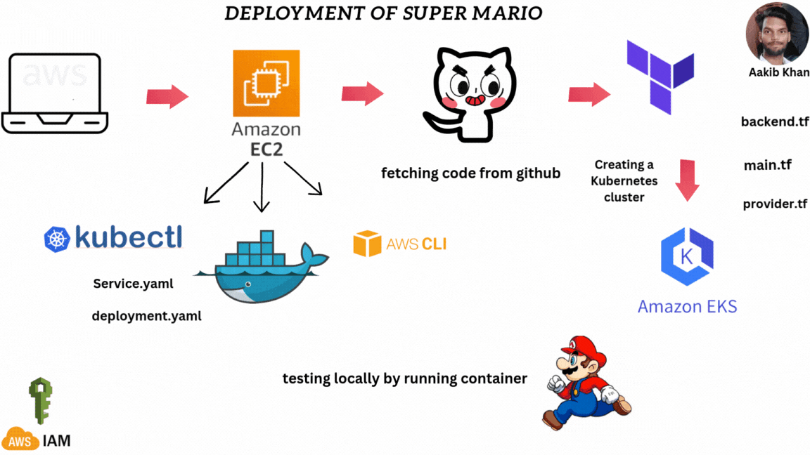
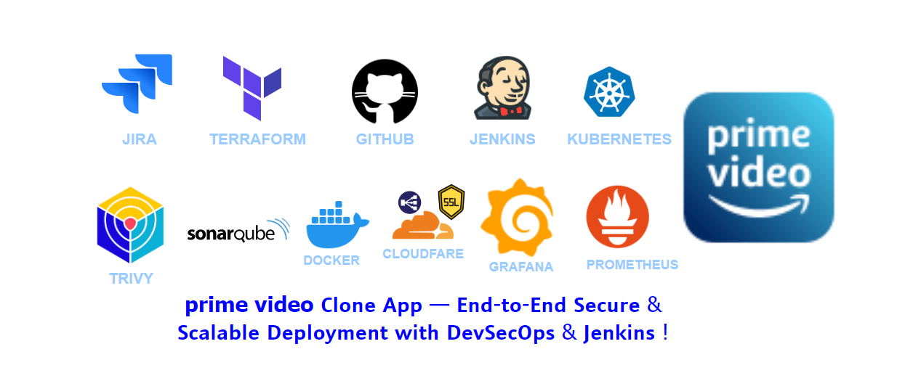
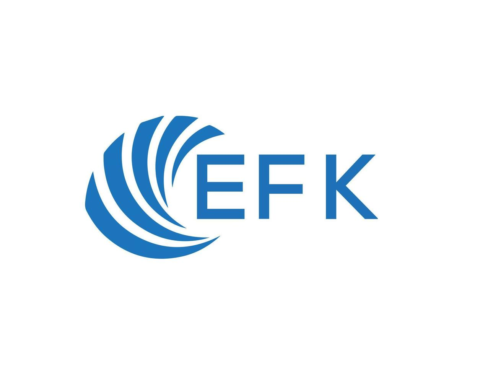

Netflix Clone — DevSecOps CI/CD Pipeline
End-to-end Jenkins pipeline with SonarQube quality gates, Trivy scanning, and Docker builds, deployed to Kubernetes with Prometheus and Grafana monitoring.
View ProjectDevOps Engineer // AWS · Kubernetes · Terraform · GitOps
I build and operate production-grade Kubernetes (Amazon EKS) platforms on AWS for large-scale microservices — automating everything with Terraform, ArgoCD, and Jenkins, and keeping it observable with Prometheus, Grafana, and the ELK stack.

A quick look at who I am and what I bring to a platform team.
I'm a DevOps Engineer with 4+ years of experience designing, automating, and operating cloud-native infrastructure on AWS for large-scale microservices applications.
My core strength is running production-grade Kubernetes (Amazon EKS) platforms — from Terraform-provisioned infrastructure and GitOps delivery with ArgoCD, to enterprise observability with Prometheus, Grafana, Thanos, OpenTelemetry, and the ELK Stack.
I've built high-volume logging and event-streaming pipelines with Kafka, Kafka Connect, and Fluent Bit, embedded DevSecOps controls with SonarQube, Trivy, Vault, and Keycloak, and led incident management across distributed environments.
I care about systems that stay up, deploy safely, and can be understood at 3 a.m. — automation, reliability, and clean observability are where I do my best work.
4+ years across product and enterprise engineering teams.
Neosoft Technologies · Pune, India
Delfine India Technology · India
BYJU'S · India
Publicis Sapient · India
The complete toolkit I use to build, ship, secure, and observe cloud-native systems.
Hands-on DevOps projects demonstrating end-to-end automation, deployment, and monitoring.

End-to-end Jenkins pipeline with SonarQube quality gates, Trivy scanning, and Docker builds, deployed to Kubernetes with Prometheus and Grafana monitoring.
View Project
Zero-downtime Java application delivery using Jenkins, Terraform-provisioned EKS, and a Blue-Green release strategy with automated traffic switching.
View Project
Fully modular Infrastructure-as-Code deployment of a highly available 3-tier architecture — VPC, subnets, ALB, auto-scaling compute, and RDS.
View Project
Containerized legacy game deployed on an EKS cluster with Terraform-managed infrastructure, LoadBalancer service exposure, and automated CI/CD.
View Documentation
Automated build, test, and deployment workflow using Jenkins and Kubernetes, with containerized delivery and integrated security scanning.
View Documentation
Multi-cluster monitoring with kube-prometheus-stack, Thanos long-term storage, Grafana dashboards, and a Fluent Bit → Kafka → Elasticsearch logging pipeline.
View ProfileVishwakarma Institute of Information Technology, Pune
Where I add the most value
Open to DevOps, Platform Engineering, and SRE opportunities. Feel free to reach out — I usually reply within a day.